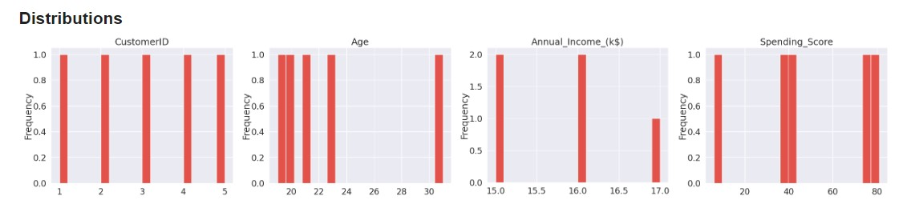
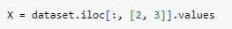
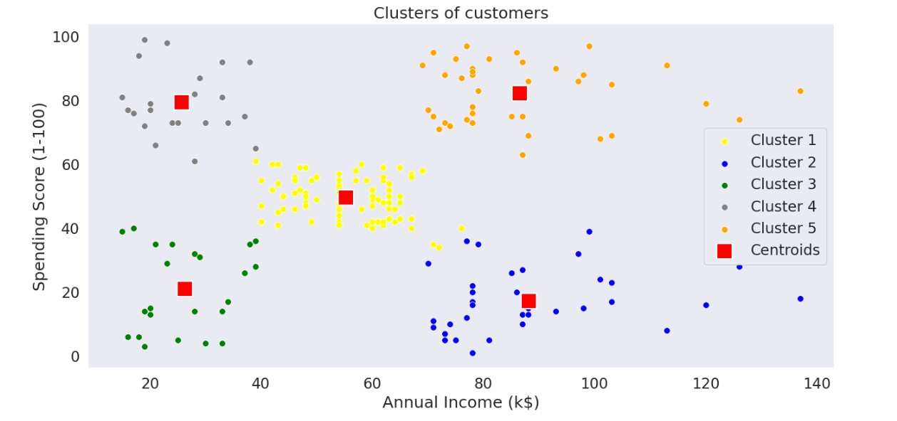

Data Collection
Data collection is the process of collecting and evaluating information or data from multiple sources to find answers to research problems, answer questions, evaluate outcomes, and forecast trends and probabilities. It is an essential phase in all types of research, analysis, and decision-making, including that done in the social sciences, business, and healthcare. Accurate data collection is necessary to make informed business decisions, ensure quality assurance, and keep research integrity.
Primary Data Collection: Primary data collection involves the collection of original data directly from the source or through direct interaction with the respondents. This method allows researchers to obtain firsthand information specifically tailored to their research objectives.
Secondary Data Collection: Secondary data collection involves using existing data collected by someone else for a purpose different from the original intent. Researchers analyze and interpret this data to extract relevant information.
Data Preprocessing
Data preprocessing is the first step of a data analysis process. This method involves preparing data so that it can be made ready for analysis and modelling. You must prepare and transform the raw data in a format that is easy to interpret and work with.
Data preprocessing is one of the most critical steps of any machine learning pipeline. This method requires more time and effort as it transforms the raw, messy data into a better, easily understandable, and structured format.
Applying K-Means Clustering
Dataset:


Import Libraries

Code
Result




Code

Result
Code

Result

Code
Result

Code
Result

Code

Result

Code

Result

Interpreting Results
The K-means clustering algorithm has successfully segmented the customer base into 5 distinct clusters based on their annual income and spending score. Each cluster exhibits unique characteristics that can inform targeted marketing strategies:
Cluster 1 (Yellow): The High-Value Bargain Hunters
• These customers exhibit a relatively low annual income but demonstrate a surprisingly high spending score.• They are likely price-conscious shoppers who actively seek out deals and promotions.
• Marketing strategies should focus on:
o Personalized discounts and coupons.
o Loyalty programs with exclusive rewards.
o Emphasizing value-for-money propositions.
Cluster 2 (Blue): The Average Spenders
• This cluster represents the average customer base with moderate annual income and spending scores.• They may not be as responsive to price-sensitive promotions as other clusters.
• Marketing strategies should focus on:
o Building brand loyalty through consistent messaging.
o Offering a diverse product range to cater to varying needs.
o Utilizing customer feedback to improve products and services.
Cluster 3 (Green): The Affluent Shoppers
• These customers possess high annual income and exhibit a high spending score, making them the most valuable segment.• They are likely to be early adopters and trendsetters.
• Marketing strategies should focus on:
o Exclusive product launches and premium experiences.
o Personalized concierge services.
o Emphasizing luxury and prestige.
Cluster 4 (Grey): The Price-Sensitive Savers
• These customers have low annual income and a low spending score, indicating a cautious approach to spending.• They are likely to be highly price-sensitive and prioritize essential purchases.
• Marketing strategies should focus on:
o Competitive pricing and discounts on essential items.
o Clear communication of product value and benefits.
o Building trust through transparent pricing policies.
Cluster 5 (Orange): The Frugal High Earners
• This cluster comprises customers with high annual income but a surprisingly low spending score.• They may be value-conscious despite their financial capacity.
• Marketing strategies should focus on:
o Highlighting product quality and durability.
o Offering exclusive deals and promotions tailored to their interests.
o Emphasizing long-term value and return on investment.
By understanding the unique characteristics of each cluster, businesses can make their marketing efforts to maximize customer engagement and drive revenue growth. This analysis provides actionable insights to optimize pricing, promotions, and product development strategies for each customer segment.